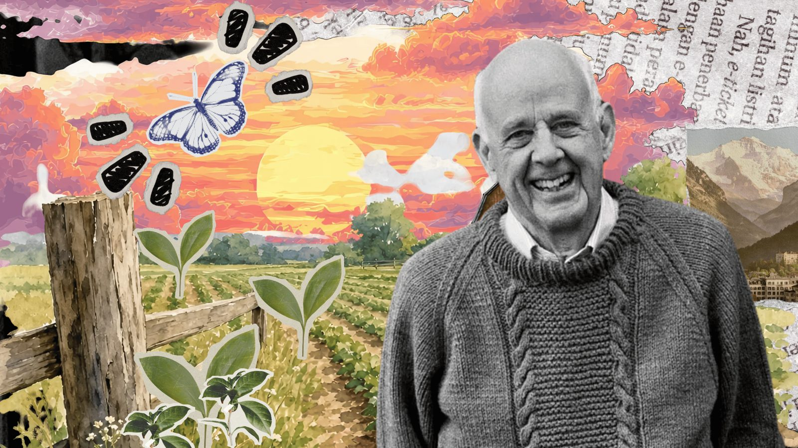

Featured issue
On the Unsettling of American Workers
Raise your hand if you’ve ever stared at your computer in the middle of a workday, twenty tabs open and a symphony of alerts vying for your attention, and thought: I should quit my job and become a hermit in the woods.
Read the whole issue →